Manuel de mosquitto-ui
mosquitto-ui est une interface web pour le broker MQTT Eclipse Mosquitto 2.1 : gérer les appareils et leurs droits, voir en direct ce qui transite par le broker, configurer ponts, certificats, sauvegardes et notifications, sans jamais toucher à la main un fichier de configuration.
Vue d'ensemble
Ce que fait l'UI
Accès
Clients, groupes et rôles de Dynamic Security, un testeur d'ACL, connexion par jetons d'accès (JWT).
En direct
Arbre des topics avec valeurs et graphiques, sessions de chaque client, enregistrement de clients précis, log du broker.
Broker
Options et listeners vérifiés avant application, règles de messages, ponts avec appairage Victron GX.
TLS
Certificats via ACME (Let's Encrypt, ZeroSSL, Google) avec challenge DNS, renouvellement automatique et listener TLS.
Exploitation sereine
Sauvegardes chiffrées vers SFTP, FTP, S3, un répertoire ou par e-mail, alertes par e-mail en cas de panne ou de lignes de log suspectes, journal de toutes les modifications.
Migration
Import de password_file, acl_file, mosquitto.conf et mosquitto.db existants.
Son architecture
Deux parties tournent côte à côte, en conteneurs Docker ou en services systemd :
- Le broker est Mosquitto 2.1 avec Dynamic Security (utilisateurs et droits) et deux plugins de mosquitto-ui : inspect (sessions, enregistrement, règles de messages) et token-auth (connexion par JWT).
- L'agent lance Mosquitto et exécute ce que l'UI lui demande : tester une nouvelle configuration avec
mosquitto --test-config, l'appliquer, recharger ou redémarrer le broker, installer des certificats. Si le broker refuse une configuration, l'ancienne reste en vigueur. Ainsi, l'UI n'a besoin ni du socket Docker ni des droits root. - L'UI parle au broker en MQTT (en tant qu'utilisateur
admin, via$CONTROLet$SYS) et à l'agent par des fichiers dans le répertoire partagé. Ses propres données (réglages, secrets chiffrés, historique) se trouvent dans le répertoire d'état.
Installation
Prérequis
- Un serveur Linux (amd64 ou arm64), avec Docker et Docker Compose ou avec systemd pour l'installation sans Docker.
- 512 Mo de mémoire pour l'UI ; le broker consomme peu.
- Ports ouverts :
1883(MQTT),8883(MQTT sur TLS, dès qu'un certificat existe),8080pour l'UI, ou mieux, seulement le reverse proxy sur443. - Pour la connexion, rien de plus (utilisateurs UI avec mot de passe). Si vous le souhaitez, ajoutez un fournisseur d'identité : Keycloak, authentik et d'autres avec OpenID Connect, ou des comptes Google, Microsoft, GitHub et consorts.
- Pour un certificat : un domaine et un fournisseur DNS doté d'une API (acme-dns ou PowerDNS).
Avec Docker Compose
Un serveur n'a besoin que de deux fichiers du dépôt : deploy/compose.yaml et deploy/env.example.
Créez le répertoire et récupérez les fichiers :
sudo mkdir -p /opt/mosquitto && cd /opt/mosquitto # copier ici compose.yaml et env.example depuis deploy/ cp env.example .env chmod 600 .envRemplissez
.env. L'essentiel :Variable Signification MOSQUITTO_PASSWORDMot de passe de l'utilisateur broker admin, au moins 12 caractères (openssl rand -base64 24). Lu uniquement au tout premier démarrage ; s'il est plus court, le broker démarre sans utilisateur et refuse tout le monde.MOSQUITTO_UI_AUTHà laisser tel quel. localmaintient toujours la connexion locale active, comme accès de secours (voir Connexion).OIDC_ISSUER,OIDC_CLIENT_ID,OIDC_CLIENT_SECRETuniquement pour les installations antérieures à 0.26 : deviennent un fournisseur au premier démarrage. Laissez-les vides pour une nouvelle installation. MOSQUITTO_UI_SECRET_KEYChiffre les secrets et signe les sauvegardes ( openssl rand -base64 32). À conserver ailleurs que sur le serveur.MOSQUITTO_UI_VERSIONVersion des deux images ; une version fixe vaut mieux que latest.Démarrez :
docker compose up -d docker compose logs -f mosquitto-uiLe premier mot de passe d'
adminse trouve dans :docker compose exec mosquitto-ui cat /var/lib/mosquitto-ui/initial-password
Les données résident dans quatre volumes : data (utilisateurs, droits, messages retenus, certificats), state
(réglages de l'UI), shared (configuration écrite par l'UI pour le broker) et backups (destinations de sauvegarde locales).
L'UI tourne en lecture seule, sans privilèges, sous son propre utilisateur.
Sans Docker (systemd)
Chaque release est accompagnée de mosquitto-ui-<version>.tar.gz. Le script qu'il contient installe deux services systemd et compile
Mosquitto 2.1.2 depuis les sources, car les distributions en sont le plus souvent encore à la 2.0. Testé sur Debian 12 et 13 et Rocky Linux 9 ;
Ubuntu et Fedora suivent le même chemin.
V=0.26.0
curl -fLO https://github.com/alexsxb/mosquitto-ui/releases/download/v$V/mosquitto-ui-$V.tar.gz
curl -fLO https://github.com/alexsxb/mosquitto-ui/releases/download/v$V/mosquitto-ui-$V.tar.gz.sha256
sha256sum -c mosquitto-ui-$V.tar.gz.sha256
tar xzf mosquitto-ui-$V.tar.gz && cd mosquitto-ui-$V
sudo ./install.shLa première fois, cela prend une à deux minutes. À la fin, le script indique où tourne l'UI et où se trouve le premier mot de passe :
==> mosquitto-ui 0.26.0 runs on http://mqtt01:8080
MQTT: port 1883, broker user admin, password in /etc/mosquitto-ui/broker.env (MOSQUITTO_DYNSEC_PASSWORD)
Login: see /var/lib/mosquitto-ui/state/initial-password (goes away after the first login)| Service | Rôle | Tourne sous |
|---|---|---|
mosquitto-ui-broker | Agent et Mosquitto, log via journalctl -u mosquitto-ui-broker | agent : root, Mosquitto : mosquitto |
mosquitto-ui | l'UI, unité durcie (seuls ses trois répertoires de données sont accessibles en écriture) | mosquitto-ui |
Options de install.sh : --port (UI, 8080 par défaut), --no-start,
--skip-packages. Les réglages se trouvent ensuite dans /etc/mosquitto-ui/mosquitto-ui.env ; après une modification,
sudo systemctl restart mosquitto-ui. Un paquet Mosquitto de la distribution ne doit pas tourner en même temps sur le port 1883 :
sudo systemctl disable --now mosquitto.
Important : conservez MOSQUITTO_UI_SECRET_KEY, tiré de /etc/mosquitto-ui/mosquitto-ui.env, en lieu
sûr. Sans elle, les réglages chiffrés, les utilisateurs locaux et la signature des sauvegardes deviennent illisibles sur un nouveau
serveur.
Tous les chemins, la mise à jour et la désinstallation : Chemins, Mises à jour et docs/standalone.md.
Connexion
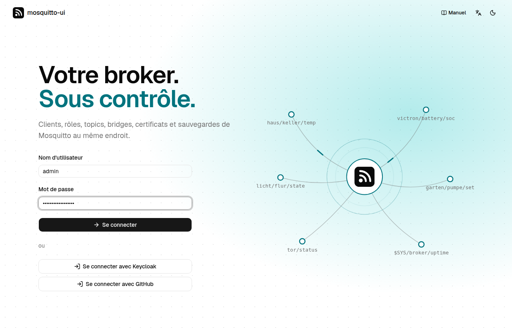
Deux façons d'entrer, toutes deux configurées sur la page Connexion : les utilisateurs UI avec mot de passe (la connexion locale) et autant de fournisseurs d'identité que vous voulez.
Le premier démarrage
- Tant qu'aucun fournisseur n'est actif, la connexion locale s'applique. Le premier démarrage crée
admin, avecMOSQUITTO_UI_LOCAL_AUTH_INITIAL_PASSWORDou un mot de passe généré, écrit dansinitial-passworddu répertoire d'état. Le fichier disparaît après la première connexion. - D'autres utilisateurs se créent sur la page Utilisateurs UI. Chacun a tous les droits.
- Mots de passe d'au moins 12 caractères, stockés en PBKDF2-SHA256 avec 600 000 itérations. Après 5 échecs en 15 minutes pour un même nom ou depuis une même adresse, chaque nouvelle tentative est retardée.
- La session prend fin après 8 heures sans requête, au plus tard 7 jours après la connexion, et immédiatement en cas de nouveau mot de passe.
Fournisseurs d'identité
Sous Connexion → Ajouter un fournisseur, vous trouvez des modèles pour Keycloak, authentik, Authelia, ZITADEL, Pocket ID, Kanidm, Google, Microsoft Entra ID, Apple, GitHub, GitLab, Gitea/Forgejo, Okta, Auth0, Amazon Cognito et tout autre fournisseur OpenID Connect. Chez le fournisseur, on crée toujours un client confidentiel avec l'authorization code flow. Exemple avec Keycloak :
- Clients → Create client, OpenID Connect, Client ID p. ex.
mosquitto-ui. - Client authentication activé (client confidentiel), Standard flow activé.
- Valid redirect URIs : l'adresse de retour qu'affiche le dialogue,
https://<hôte de l'UI>/auth/sso/keycloak(ouhttps://<hôte de l'UI>/*). Valid post logout redirect URIs :https://<hôte de l'UI>/*. - Créez un rôle ou un groupe pour les administrateurs, p. ex.
mosquitto-admin, et saisissez-le dans le dialogue sous Qui peut entrer ? - Reportez dans le dialogue l'adresse du realm, le Client ID et le secret de Credentials, puis vérifiez avec Tester.
Dès qu'un fournisseur est actif, la connexion locale peut être désactivée. Si vous vous êtes enfermé dehors, définissez MOSQUITTO_UI_AUTH=local
et redémarrez l'UI : la connexion locale s'applique de nouveau, quoi que dise la page. Mot de passe oublié : arrêtez l'UI,
supprimez users.json dans le répertoire d'état, démarrez avec MOSQUITTO_UI_AUTH=local : admin est recréé.
Depuis une version antérieure à 0.26
Si vous aviez défini QUARKUS_OIDC_* (ou OIDC_* dans .env), vous retrouvez au premier démarrage de la 0.26
le même fournisseur sur la page Connexion, avec le rôle de MOSQUITTO_UI_ADMIN_ROLE. La connexion locale reste désactivée. Nouveauté :
l'adresse de retour /auth/sso/keycloak ; avec https://<hôte>/* comme Valid redirect URI, elle convient déjà.
Pour Keycloak, docker/keycloak-theme/mosquitto-ui contient un thème de connexion dans le style de l'UI ; on ne le choisit que pour ce client
(Login settings → Login theme).
HTTPS et reverse proxy
L'UI ne parle que HTTP. Placez devant elle un proxy avec TLS. L'important : les en-têtes X-Forwarded-* pour les redirections de la connexion,
et des réponses non mises en tampon pour les pages en direct (Topics, Logs : Server-Sent Events).
Caddy
mqtt-ui.example.com {
reverse_proxy 127.0.0.1:8080
}nginx
location / {
proxy_pass http://127.0.0.1:8080;
proxy_set_header Host $host;
proxy_set_header X-Forwarded-For $proxy_add_x_forwarded_for;
proxy_set_header X-Forwarded-Proto $scheme;
proxy_buffering off;
proxy_read_timeout 1h;
}Indiquez ensuite à l'UI à quels proxys elle peut se fier : avec Docker, TRUSTED_PROXIES dans .env ; sans Docker, décommentez les lignes
QUARKUS_HTTP_PROXY_* dans mosquitto-ui.env. Pour qu'elle ne soit joignable que via le proxy : QUARKUS_HTTP_HOST=127.0.0.1.
MQTT derrière un proxy : si Traefik, par exemple, transmet MQTT en TCP au broker, celui-ci ne voit que l'adresse du proxy. La page Configuration propose pour cela Listener pour un proxy, avec le protocole PROXY ; le port 1883 habituel reste sans.
Premiers pas
- Connectez-vous, changez le mot de passe ou créez vos propres utilisateurs sous Utilisateurs UI et, si vous en avez un, configurez le fournisseur d'identité sous Connexion.
- Mettez la clé secrète en lieu sûr (voir plus haut).
- Créez rôles et clients : d'abord un rôle avec les topics dont un type d'appareil a besoin, puis un client avec mot de passe par appareil, voir Notions de base. Vérifiez avec le testeur d'ACL.
- Activez le log : sous Configuration, choisissez un niveau de journal autre que « Désactivé ».
- Demandez un certificat ; l'UI configure alors le listener TLS sur 8883 (Certificat).
- Créez une tâche de sauvegarde et lancez-la une fois à la main (Sauvegardes).
- Notifications : renseignez le serveur mail et les destinataires, envoyez un e-mail de test.
Notions de base
Clients, groupes, rôles
Les utilisateurs et les droits sont gérés par le plugin Dynamic Security de Mosquitto. L'UI les présente ainsi :
| Notion | Signification |
|---|---|
| Client | Un identifiant sur le broker : nom d'utilisateur et mot de passe. Un appareil peut se connecter avec n'importe quel ID client ; plusieurs connexions avec le même identifiant sont possibles. |
| Rôle | Une liste de règles (ACL) : quels topics peuvent être publiés, reçus, abonnés. |
| Groupe | Plusieurs clients partageant les mêmes rôles, p. ex. tous les Shelly. |
| Accès par défaut | Ce qui s'applique quand aucune règle ne correspond. D'usine : publier et s'abonner interdits, recevoir et se désabonner autorisés. |
Types de règles d'un rôle : publishClientSend (le client peut envoyer), publishClientReceive (le client reçoit des messages),
subscribeLiteral/subscribePattern (s'abonner, exactement ou avec +/#), unsubscribe….
Dans les topics, %c représente l'ID client et %u le nom d'utilisateur.
Abonnements avec jokers : Mosquitto 2.1 refuse les abonnements avec + ou # si le rôle
n'a pas « Autoriser les abonnements avec jokers » ; le client reçoit seulement « subscription denied ». L'UI l'active pour les nouveaux rôles.
L'utilisateur admin est réservé à l'UI : il a droit à $CONTROL et $SYS, mais ne peut pas
envoyer de messages sur les topics ordinaires. Les appareils reçoivent leurs propres clients. L'UI protège admin et tout ce dont il a besoin
contre les modifications, pour ne pas s'enfermer dehors.
Comment le broker décide
- Rôles du client, puis rôles de ses groupes, chaque fois par priorité (la plus haute d'abord).
- Au sein d'un rôle, une règle exacte passe avant les motifs, quelle que soit la priorité.
- La première règle qui correspond l'emporte. Si aucune ne correspond, l'accès par défaut s'applique.
Le testeur d'ACL de la page Règles refait exactement ce calcul et indique la règle décisive.
Où se trouve la configuration
mosquitto.confvous appartient (figé dans l'image, sans Docker/etc/mosquitto-ui/mosquitto.conf). Il charge les plugins et, à la fin, viainclude_dir, les fichiers de l'UI.conf.d/mosquitto-ui.confest écrit par l'UI : options et listeners de la page Configuration.conf.d/mosquitto-ui-bridges.conf: les ponts, à part, car Mosquitto doit lire leurs mots de passe en clair.- L'agent vérifie chaque modification avant de l'appliquer. Certaines options ne prennent effet qu'après un redémarrage, qui déconnecte brièvement tous les clients ; l'UI indique à l'avance s'il y aura rechargement ou redémarrage.
Les pages
À gauche, la navigation en trois groupes : Vue d'ensemble pour observer, Accès pour les droits, Broker pour les réglages. En haut à droite, la langue (Deutsch, English, Français) et le thème clair/sombre ; en bas à gauche, le menu utilisateur avec Manuel et Se déconnecter.
Tableau de bord
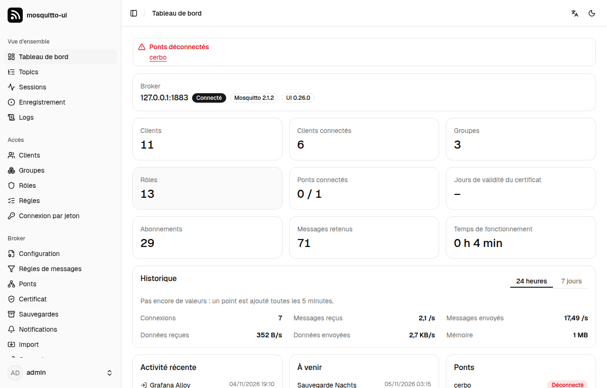
- En haut, les alertes : ponts déconnectés, clients habituellement connectés qui manquent, sauvegardes échouées ou en retard, certificat sur le point d'expirer.
- Indicateurs issus de
$SYS: clients connectés, abonnements, messages retenus, temps de fonctionnement ; les tuiles mènent à la page correspondante. - Historique sur 24 heures ou 7 jours (connexions, messages, données, mémoire), un point toutes les 5 minutes.
Topics
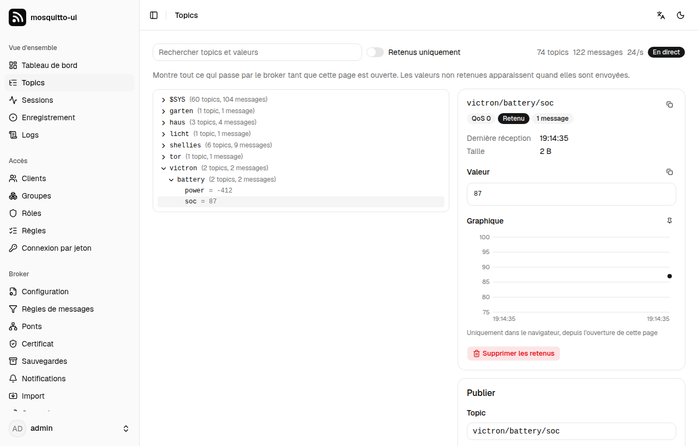
- Tout ce qui transite par le broker, sous forme d'arbre avec la dernière valeur, tant que la page est ouverte. Recherche dans les topics et les valeurs, filtre Retenus uniquement.
- À droite : JSON mis en forme, QoS, retain, les valeurs depuis l'ouverture, un graphique (nombres, y compris dans du JSON ; l'épingler le conserve dans le navigateur).
- Publier sur un topic, avec QoS et retain. Atteint aussi les ponts, p. ex.
W/…d'un Victron GX. - Supprimer les retenus pour un topic et tout ce qui se trouve en dessous, après confirmation indiquant leur nombre.
- Pour cela, l'UI crée temporairement l'utilisateur broker
mosquitto-ui-monitoret le supprime une minute après le départ du dernier observateur.
Sessions
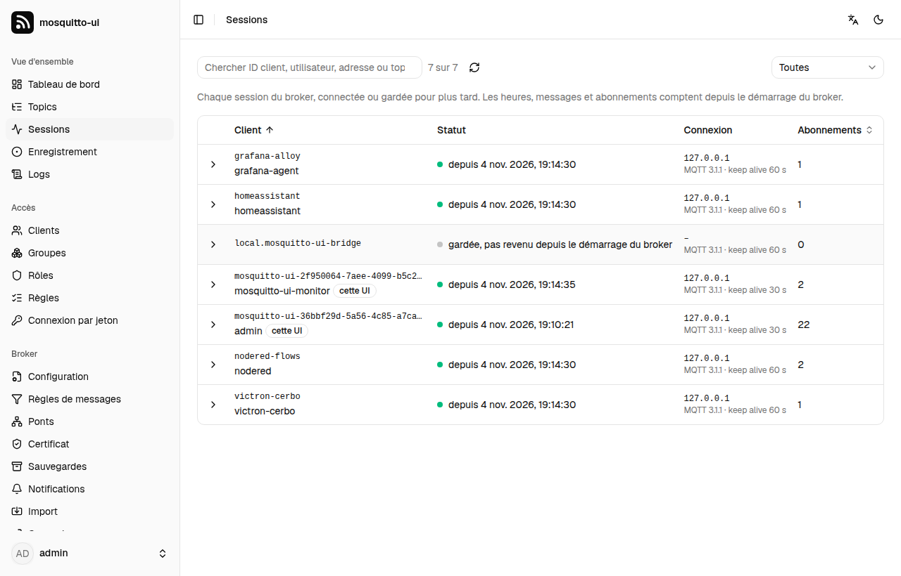
Chaque session que détient le broker, connectée ou conservée pour plus tard (sessions persistantes) : ID client, utilisateur, adresse, keepalive, abonnements avec QoS, messages envoyés et reçus avec horodatage. Déplier une ligne affiche les abonnements. Les boutons à droite lancent un enregistrement ou ouvrent le log de ce client. Les compteurs partent du démarrage du broker.
Enregistrement
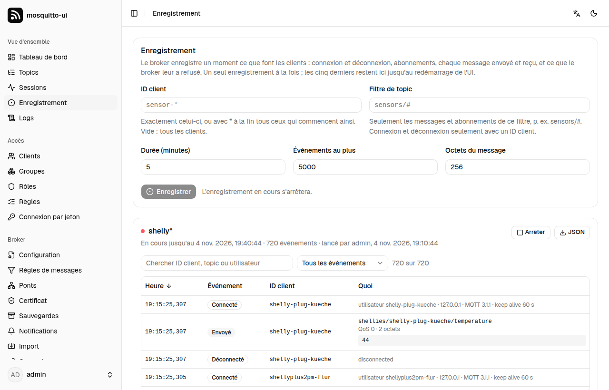
shelly.- Enregistre jusqu'à une heure de ce que font les clients : connexions et déconnexions avec leur motif, abonnements, chaque message envoyé et distribué (les premiers octets), et ce que le broker a refusé.
- Pour un ID client, tous ceux d'un préfixe (
sensor-*), un filtre de topic, ou les deux. Un seul enregistrement à la fois, 50 000 événements au plus. - Téléchargement en JSON, valeurs en texte ou en base64. Les cinq derniers sont conservés jusqu'au redémarrage de l'UI.
Cas typique : un appareil ne remonte aucune valeur. Lancez un enregistrement sur son ID client, redémarrez l'appareil : vous voyez s'il se connecte, à quoi il s'abonne et si le broker refuse quelque chose.
Logs
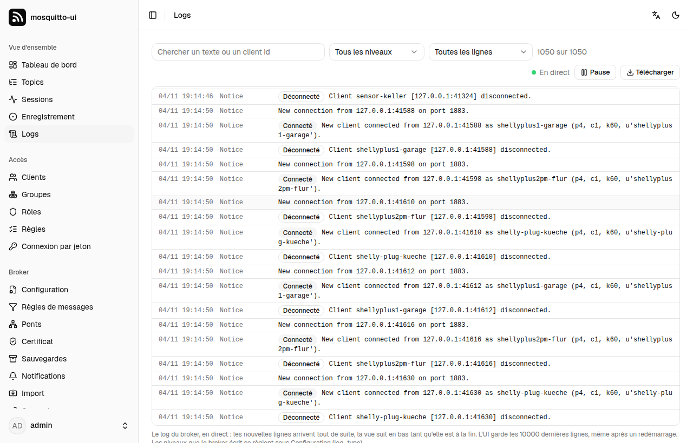
- Le log du broker en direct, comme
tail -f. Remonter dans la liste suspend le défilement, Pause fige l'affichage. - Recherche, choix des Niveaux avec le nombre de lignes par niveau, filtres (Erreurs et refus, Connexions, Abonnements, Bridges), téléchargement.
- Les niveaux que le broker n'écrit pas d'après
log_typesont grisés. Si le niveau de journal est sur « Désactivé », la page le signale. - Depuis Clients et Sessions, le bouton de log n'ouvre que les lignes d'un client.
- L'UI conserve 10 000 lignes, même après un redémarrage. Mosquitto ne transmet jamais les lignes de débogage : elles ne figurent que dans
docker logsou dans le journal systemd.
Clients
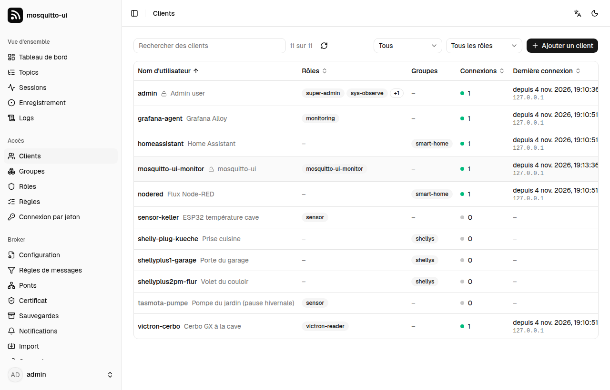
- Création avec mot de passe, rôles et groupes ; activation/désactivation (inactif : ne peut pas se connecter).
- Sur chaque ligne : modifier, changer le mot de passe, Déconnecter (toutes les connexions de cet identifiant ; la plupart des appareils reviennent aussitôt), log, supprimer.
- Dernière connexion, avec l'adresse, est mémorisée par l'UI elle-même, qui vérifie toutes les 15 secondes.
- En dessous, un tableau à part pour les clients venus avec un jeton d'accès.
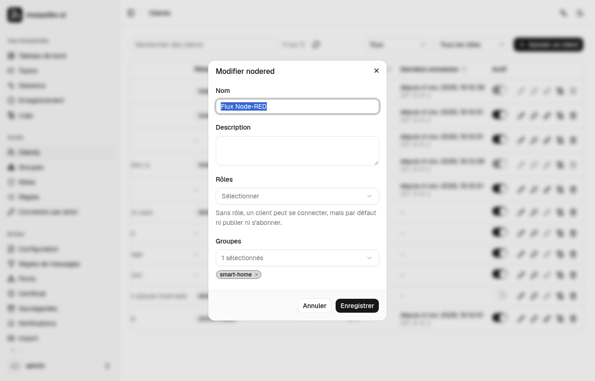
Groupes et rôles
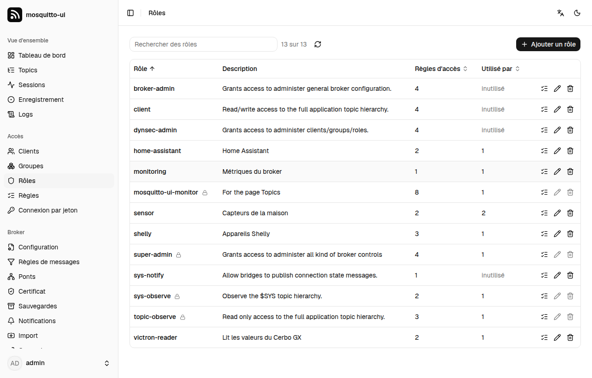
- Rôles : ajouter des règles (type, topic, priorité, autoriser/interdire), « Autoriser les abonnements avec jokers ».
- Groupes : rôles et membres ; le groupe des clients anonymes est signalé.
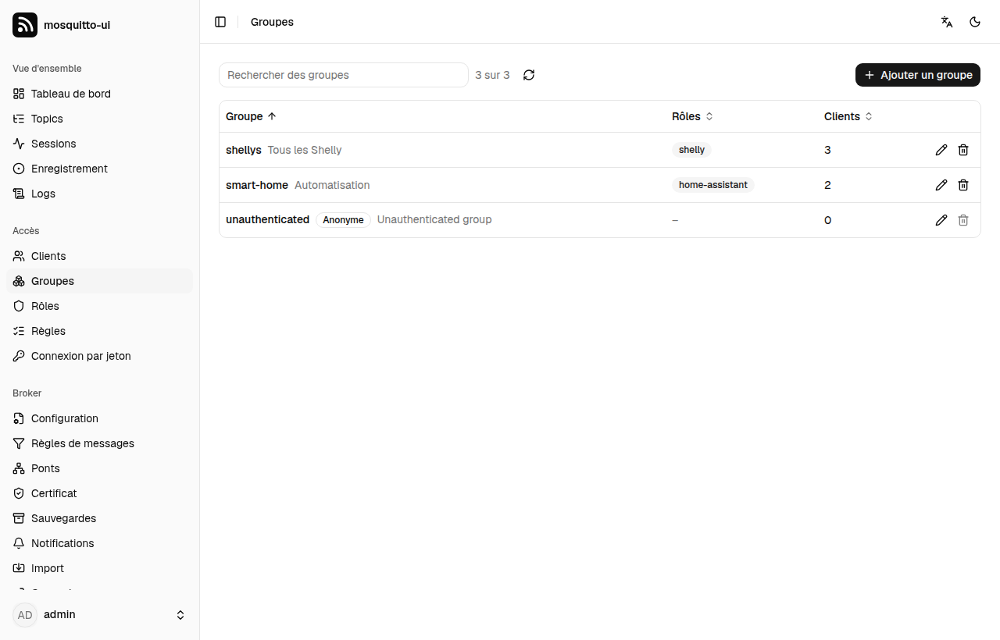
Règles
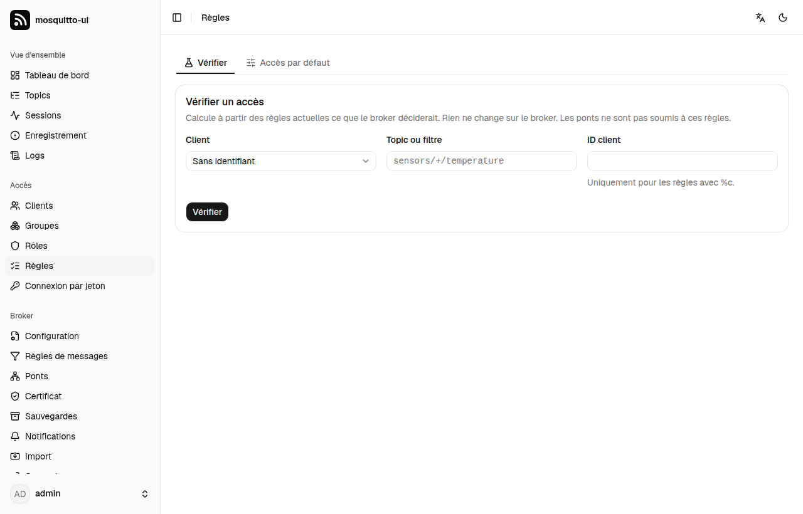
- Testeur d'ACL (onglet Vérifier) : saisissez un client et un topic ; la page indique, pour publier, recevoir, s'abonner et se désabonner, si c'est permis et quelle règle en décide.
- Accès par défaut pour tout ce qu'aucune règle ne couvre. Une modification s'applique immédiatement à tous.
- Clients sans identifiant : les clients qui se connectent sans identifiant reçoivent les rôles de ce groupe, uniquement avec
allow_anonymous true.
Connexion par jeton
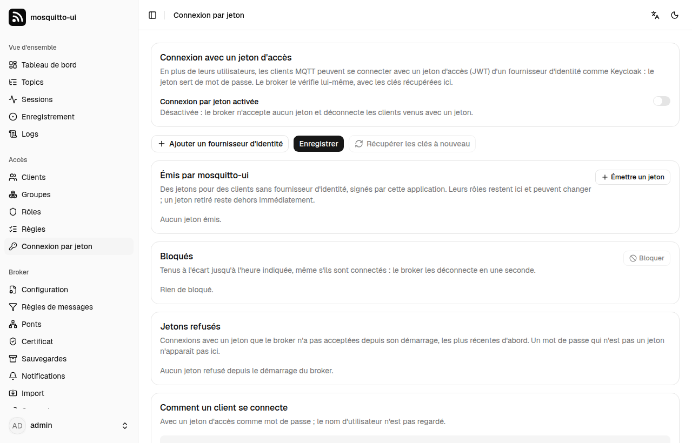
- Les clients se connectent avec un jeton d'accès (JWT) comme mot de passe, émis p. ex. par Keycloak. Le broker vérifie lui-même signature, émetteur, audience et expiration.
- Pour chaque fournisseur d'identité : émetteur, audience, claim du nom d'utilisateur et des groupes, quels groupes reçoivent quels rôles, Lier l'ID client au nom d'utilisateur.
- Émis par mosquitto-ui : jetons pour les appareils sans fournisseur d'identité, avec des rôles modifiables par la suite ; une révocation agit immédiatement.
- Bloqués : tenir à l'écart un utilisateur, un sujet ou un jeton précis jusqu'à une heure donnée. Jetons refusés, avec le motif.
- En détail avec Keycloak :
docs/token-login-keycloak.md.
Configuration
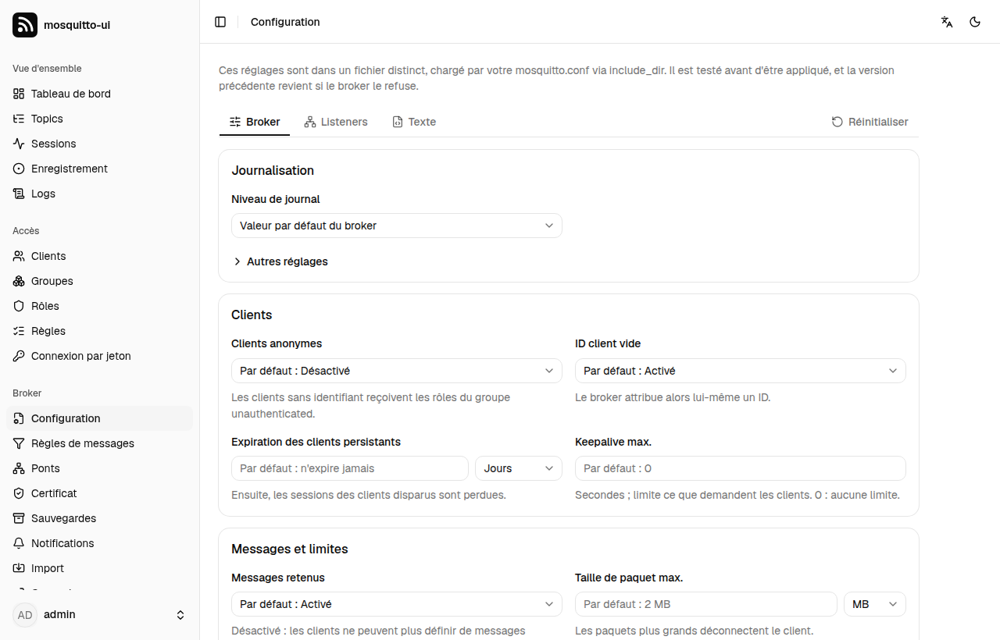
- Broker : journalisation (
log_type; « Désactivé » coupe tout le log), clients (anonymes, sessions persistantes, keepalive), messages et limites,$SYS. - Listeners : ports supplémentaires, TLS avec le certificat de l'UI, WebSockets, protocole PROXY.
- Texte : modifier directement le fichier de l'UI.
- Avant d'appliquer, l'UI montre ce qui change et s'il y aura rechargement (les clients restent connectés) ou redémarrage (tous sont brièvement déconnectés).
- Réinitialiser : ramène les parties choisies à l'état d'une nouvelle installation, après saisie de
RESET.
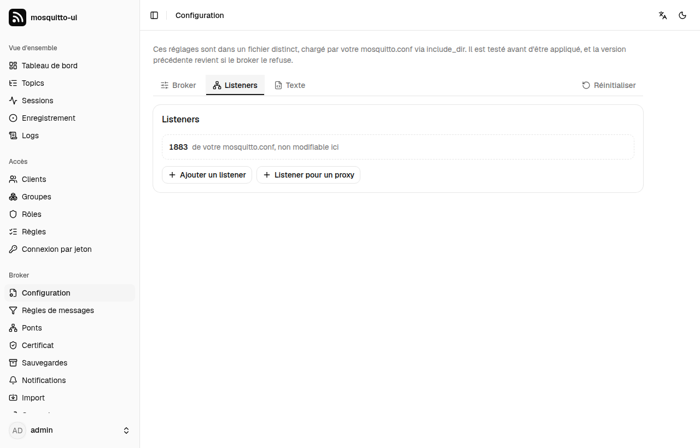
mosquitto.conf et ceux de l'UI.Règles de messages
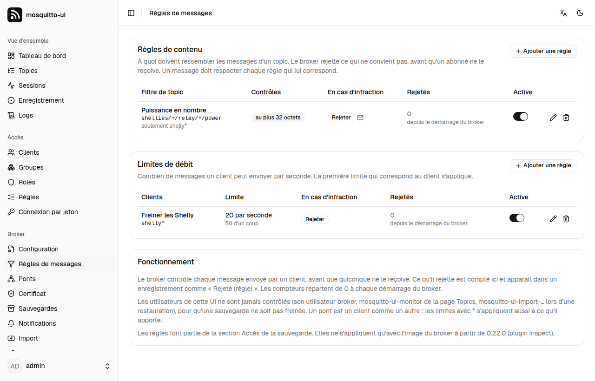
- Règles de contenu : ce que doivent être les messages d'un topic : JSON valide, taille maximale, champs obligatoires avec leur type.
- Limites de débit : combien de messages un client peut envoyer (Par seconde et D'un coup).
- Ce qui ne convient pas est rejeté par le broker avant que quiconque ne le reçoive ; sur demande, il déconnecte le client ou l'UI envoie un e-mail.
Ponts et Victron
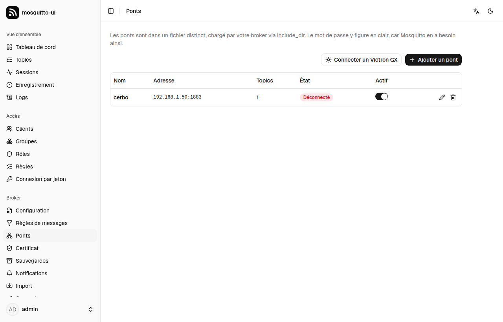
- Connexions vers d'autres brokers, avec les topics par sens (
in,out,both), préfixes, état et avertissements en cas de boucle. - Connecter un Victron GX configure un pont en une étape, en lecture seule ou dans les deux sens ; à partir de Venus OS 3.80, via l'appairage (Settings → Integrations → MQTT Devices, 120 secondes).
- L'UI maintient le GX éveillé (keepalive toutes les 30 secondes). Si l'UI ne tourne pas, les valeurs cessent d'arriver au bout d'une minute.
- Désactiver un pont le garde dans le fichier, sans redémarrage.
Certificat
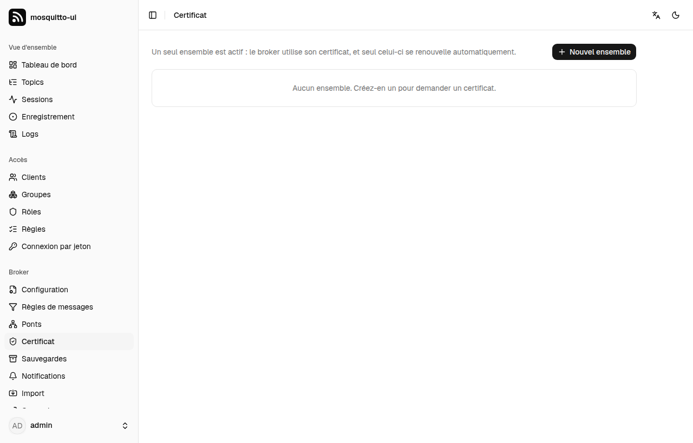
- Demandé via ACME avec challenge DNS, par acme-dns ou l'API PowerDNS. AC : Let's Encrypt (d'abord en staging !), ZeroSSL, Google Trust Services, et toute autre par son adresse.
- Certificats regroupés en ensembles (p. ex. staging et production) ; un seul est actif et se renouvelle de lui-même dans le dernier tiers de sa validité.
- Configurer automatiquement le listener TLS crée le listener sur 8883 au premier certificat (un redémarrage). Les renouvellements passent par un rechargement, les clients restent connectés.
- Seul le broker reçoit la clé ; l'UI ne peut pas la relire.
Sauvegardes
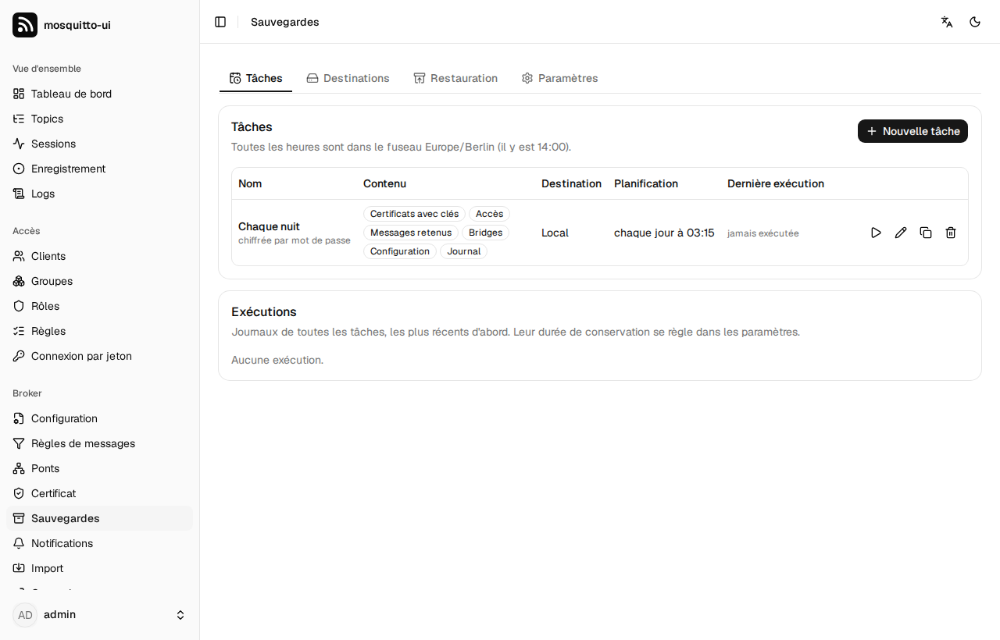
- Destinations : SFTP, FTP/FTPS, S3, un répertoire, e-mail. Tâches : quoi, où, quand (quotidien, hebdomadaire, mensuel, manuel), chiffré par mot de passe ou GPG.
- Parties : accès, configuration, ponts, certificats, messages retenus, journal, réglages de sauvegarde.
- Restaurer depuis une destination ou un fichier téléversé ; remplace les parties choisies et redémarre le broker. Les archives sont signées avec la clé secrète.
- Les sauvegardes chiffrées s'ouvrent aussi sans l'UI :
openssl enc -d -aes-256-cbc -pbkdf2 -iter 600000 -md sha256 -in FILE.zip.enc -out FILE.zip.
Notifications
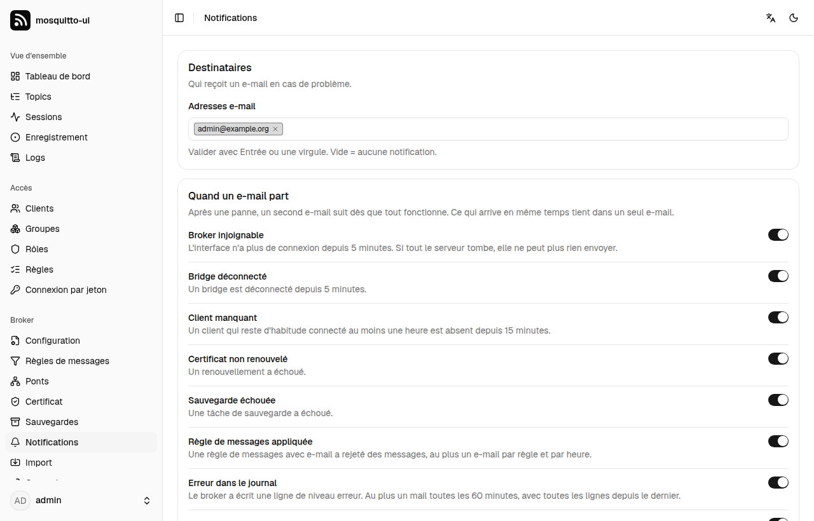
| Quand | |
|---|---|
| Broker injoignable | l'UI n'a plus de connexion depuis 5 minutes |
| Bridge déconnecté | un pont est déconnecté depuis 5 minutes |
| Client manquant | un client habituellement connecté longtemps est absent depuis 15 minutes ; exceptions par nom |
| Certificat non renouvelé, Sauvegarde échouée | échec du renouvellement ou de la sauvegarde |
| Règle de messages appliquée | une règle avec e-mail a rejeté des messages, au plus une fois par heure |
| Erreur dans le journal | le broker a écrit une ligne de niveau erreur, au plus un e-mail par heure |
| Nombreuses connexions refusées | 10 en 10 minutes, avec ID client et adresses |
Après une panne, un second e-mail suit dès que tout fonctionne à nouveau. Si tout le serveur tombe, l'UI ne peut rien envoyer : pour cela,
surveillez /q/health depuis l'extérieur.
Import
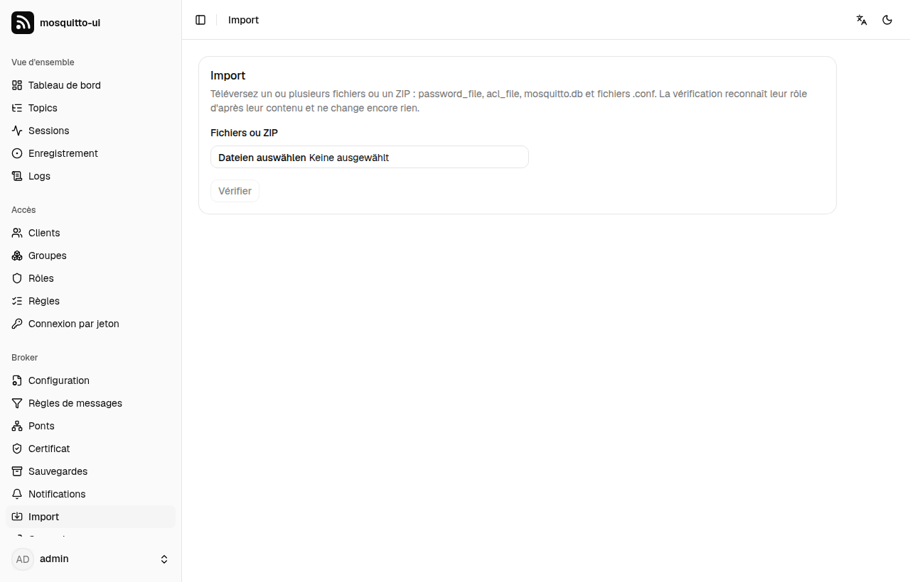
- Pour la migration :
password_file,acl_file,mosquitto.conf/conf.d,mosquitto.db, séparément ou en ZIP. - La vérification reconnaît chaque fichier d'après son contenu et affiche un aperçu, sans rien modifier. Choisissez ensuite les parties.
- Les empreintes de mots de passe sont reprises : les appareils gardent leurs mots de passe. Chaque utilisateur reçoit un rôle
imported-<utilisateur>.
Connexion
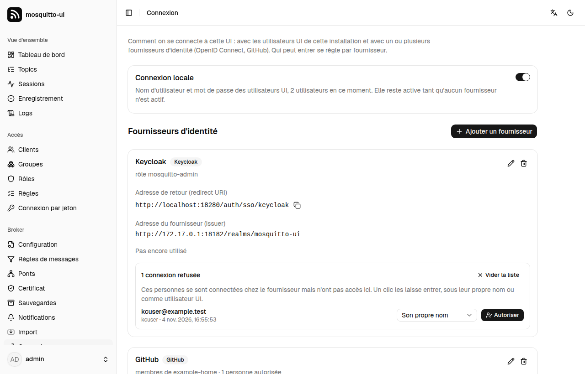
- Connexion locale : active ou non. Elle ne peut être désactivée que si un fournisseur est actif, et le dernier fournisseur ne peut être désactivé que si la connexion locale est active. Il reste ainsi toujours un moyen d'entrer.
- Chaque fournisseur affiche son adresse de retour à copier, l'adresse du fournisseur, qui peut entrer et sa dernière utilisation.
- Connexions refusées : les personnes qui se sont connectées chez le fournisseur sans remplir aucune règle, avec les rôles du jeton. Autoriser les laisse entrer d'un clic, sous leur propre nom ou comme l'un des utilisateurs UI.
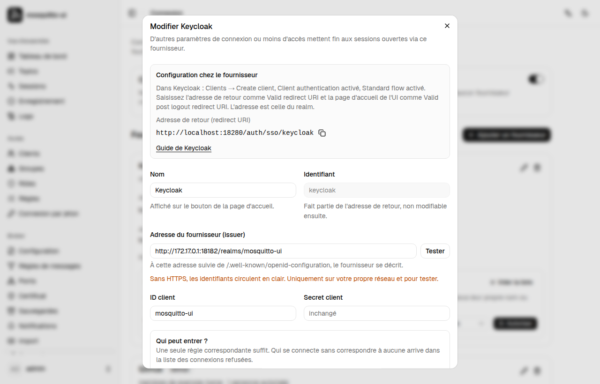
Qui peut entrer ? Une seule règle correspondante suffit :
- Toute personne qui peut se connecter chez ce fournisseur : lorsque le fournisseur décide lui-même qui peut utiliser le client. Pas avec Google, GitHub ou Apple, où tout le monde a un compte.
- Rôles ou groupes du jeton, p. ex.
mosquitto-admin. Le modèle sait où ils se trouvent dans le jeton ; modifiable sous Avancé. - Organisations et équipes sur GitHub :
orgouorg/team. - Personnes autorisées : adresse e-mail,
*@example.orgpour tout un domaine, ou nom d'utilisateur. Seules les adresses e-mail vérifiées comptent. Avec un utilisateur UI à côté, la connexion compte comme celle de cet utilisateur.
Si les paramètres de connexion d'un fournisseur changent ou si moins de personnes peuvent entrer, ses sessions prennent fin ; un nouveau nom ou davantage
de personnes autorisées les laissent ouvertes. Se déconnecter déconnecte aussi chez le fournisseur, s'il le permet. Détails : docs/anmeldung.md.
Utilisateurs UI
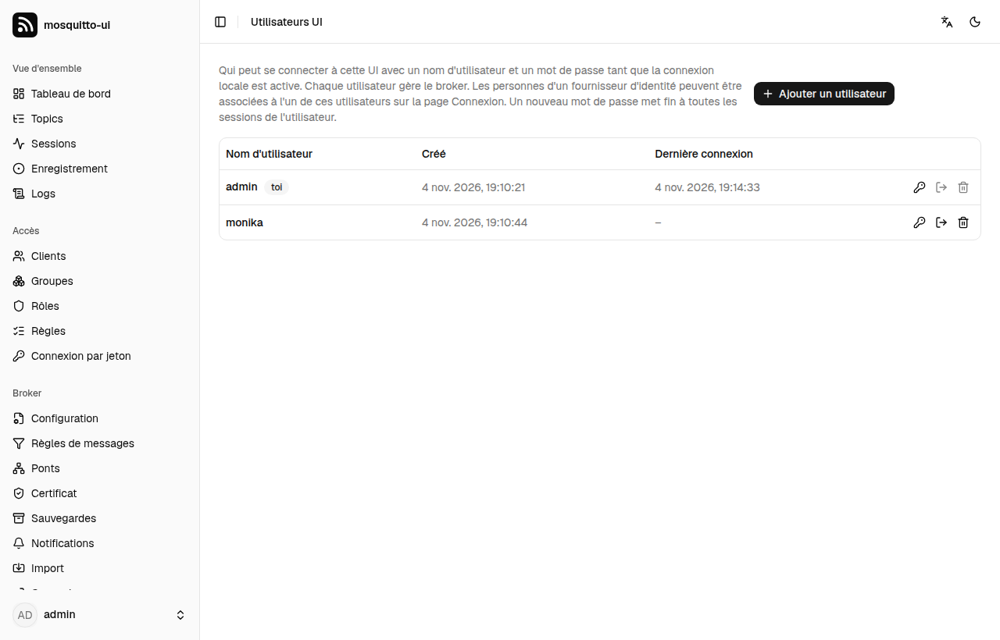
Qui peut se connecter à l'UI avec un mot de passe : créer, définir le mot de passe (ferme les sessions de l'utilisateur), fermer les sessions, supprimer. On ne peut supprimer ni son propre compte ni le dernier utilisateur. Même lorsque la connexion locale est désactivée, on peut leur associer des personnes d'un fournisseur sur la page Connexion. Ces utilisateurs n'ont rien à voir avec les clients MQTT.
Journal
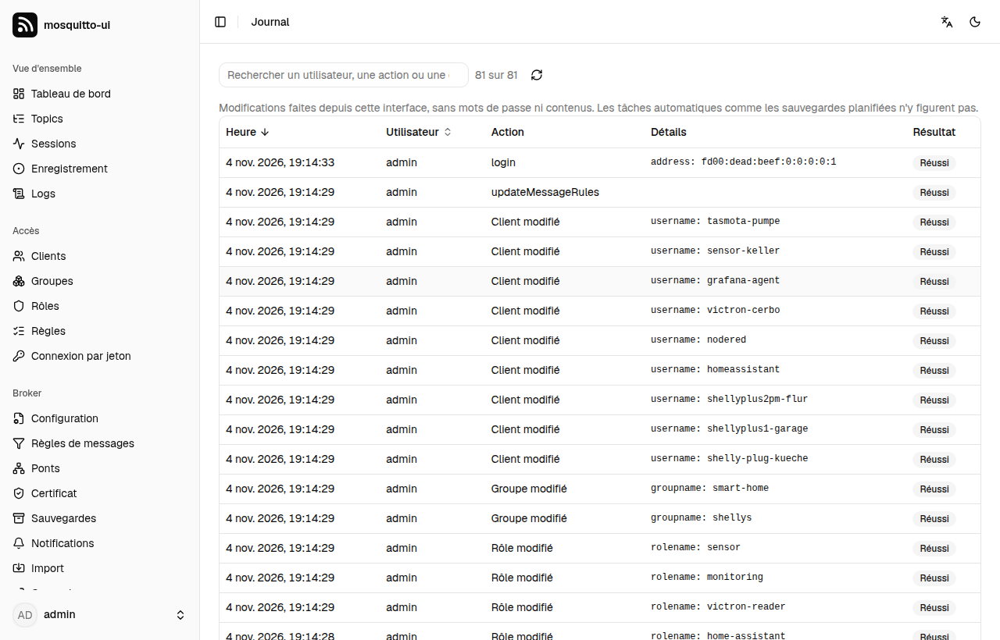
Chaque modification faite via l'UI, avec utilisateur, heure et résultat, ainsi que les connexions (avec le fournisseur), les connexions refusées et les échecs de la connexion locale. Les mots de passe, les clés et le contenu des messages n'y figurent jamais. Les 20 000 dernières entrées, incluses dans la sauvegarde comme partie distincte.
Sur smartphone
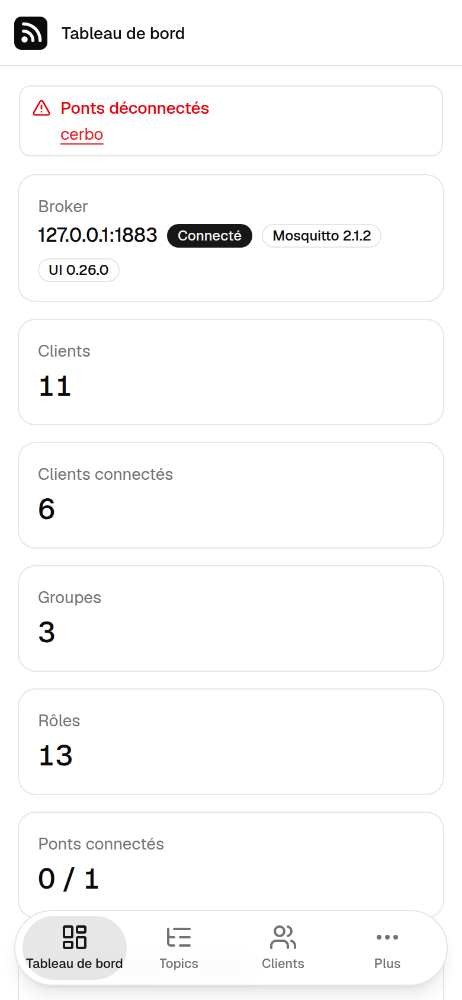
Sur smartphone, une barre en bas mène aux pages principales, Plus au reste, à la langue, à l'apparence et au manuel. En HTTPS, l'UI peut s'ajouter à l'écran d'accueil comme une application.
Exploitation
Mises à jour
| Installation | Mise à jour |
|---|---|
| Docker | Définissez MOSQUITTO_UI_VERSION dans .env, puis docker compose pull && docker compose up -d. Une nouvelle image du broker redémarre le broker. |
| sans Docker | Décompressez la nouvelle archive, sudo ./install.sh. Le broker ne redémarre que si Mosquitto, les plugins ou l'agent ont changé. Pour revenir en arrière : installez l'ancienne archive de la même façon. |
L'UI et l'image du broker vont ensemble et portent la même version.
Sauvegarde et migration
- Une tâche de sauvegarde avec toutes les parties couvre utilisateurs, droits, configuration, ponts, certificats et messages retenus.
- Conservez en plus la clé secrète. Les utilisateurs UI et les fournisseurs d'identité font partie de la section Accès ; à la restauration, les utilisateurs UI manquants sont ajoutés, et l'état de la connexion locale (active ou non) reste celui du nouveau serveur.
- Migration, y compris de Docker vers systemd : créez une sauvegarde, réinstallez (sans Docker avec
--no-start), reportez la mêmeMOSQUITTO_UI_SECRET_KEY, démarrez, puis restaurez la sauvegarde sur la page Sauvegardes.
Dépannage
| Symptôme | Cause |
|---|---|
L'appareil ne se connecte pas, le log indique disconnected: not authorised | Mauvais mot de passe, client inactif ou inconnu. Mosquitto 2.1 écrit la même chose dans les trois cas. |
| L'appareil se connecte mais ne reçoit rien | Abonnement refusé : règle manquante, ou le rôle n'autorise pas les abonnements avec jokers. Le testeur d'ACL et l'enregistrement le montrent. |
| La page Logs reste vide | Niveau de journal sur « Désactivé » sous Configuration, ou log_dest topic absent d'un mosquitto.conf personnalisé. |
| « Pas de connexion au broker » | Le broker ne tourne pas, ou MOSQUITTO_PASSWORD ne correspond plus à l'utilisateur admin. |
| Après la connexion chez le fournisseur, retour à la page d'accueil avec « Le fournisseur est injoignable ou a refusé la connexion » | Le fournisseur ne répond pas à l'UI ou refuse. Le log de l'UI contient Login at /auth/sso/… failed avec la raison ; sur la page Connexion, vérifiez l'adresse avec Tester. Erreur chez le fournisseur lui-même : le plus souvent l'adresse de retour. |
| Aucun utilisateur broker après le premier démarrage | Mot de passe de moins de 12 caractères. Videz le volume de données et redémarrez avec un mot de passe plus long. |
| La connexion tourne en boucle | Le proxy ne définit pas X-Forwarded-Proto ou n'est pas déclaré comme fiable. |
| Topics ou Logs ne se mettent pas à jour en direct | Le proxy met en tampon : avec nginx, proxy_buffering off. |
| Sans Docker : port 1883 occupé | Le Mosquitto de la distribution tourne : sudo systemctl disable --now mosquitto. |
Logs : docker compose logs mosquitto mosquitto-ui ou journalctl -u mosquitto-ui-broker -u mosquitto-ui.
Référence
Variables d'environnement
| Variable | Signification | Par défaut |
|---|---|---|
MOSQUITTO_HOST, MOSQUITTO_PORT | Broker | localhost, 1883 |
MOSQUITTO_USERNAME, MOSQUITTO_PASSWORD | Utilisateur de l'UI sur le broker | (obligatoire) |
MOSQUITTO_TLS | TLS vers le broker | false |
MOSQUITTO_UI_AUTH | local : connexion locale toujours active (accès de secours) | oidc |
MOSQUITTO_UI_LOCAL_AUTH_INITIAL_PASSWORD | premier mot de passe d'admin | généré |
MOSQUITTO_UI_LOCAL_AUTH_SESSION_TIMEOUT, …_SESSION_MAX | fin de session sans requête, après la connexion | PT8H, P7D |
QUARKUS_OIDC_AUTH_SERVER_URL, …_CLIENT_ID, …_CREDENTIALS_SECRET | avant 0.26 : deviennent un fournisseur au premier démarrage, ne sont plus lues ensuite | |
MOSQUITTO_UI_ADMIN_ROLE | rôle exigé par le fournisseur repris | mosquitto-admin |
MOSQUITTO_UI_SECRET_KEY | clé des secrets et de la signature des sauvegardes | générée dans le répertoire d'état |
MOSQUITTO_UI_STATE_DIR | données de l'UI | /var/lib/mosquitto-ui |
MOSQUITTO_UI_SHARED_DIR, MOSQUITTO_UI_BROKER_SHARED_DIR | répertoire partagé, pour l'UI et tel que le broker le voit | /mosquitto/ui |
MOSQUITTO_UI_CERT_DIR | certificats, tels que le broker les voit | /mosquitto/data/certs |
MOSQUITTO_UI_BACKUP_LOCAL_ROOT | destinations de sauvegarde locales uniquement sous ce chemin | /backups |
MOSQUITTO_UI_BROKER_LOG_KEEP | lignes de log conservées | 10000 |
MOSQUITTO_UI_NOTIFICATIONS_REJECTED_LOGINS, …_REJECTED_WINDOW | seuil de l'e-mail sur les connexions refusées | 10, PT10M |
QUARKUS_HTTP_PORT, QUARKUS_HTTP_HOST | port et adresse de l'UI | 8080, toutes |
QUARKUS_HTTP_PROXY_PROXY_ADDRESS_FORWARDING, …_ALLOW_X_FORWARDED, …_TRUSTED_PROXIES | derrière un reverse proxy | désactivé |
Chemins et ports
| Quoi | Docker | sans Docker |
|---|---|---|
| Configuration du broker | dans l'image, la vôtre par montage | /etc/mosquitto-ui/mosquitto.conf |
| Réglages de l'UI | .env | /etc/mosquitto-ui/mosquitto-ui.env |
| Utilisateurs, droits, messages retenus, certificats | volume data | /var/lib/mosquitto |
| Données de l'UI | volume state | /var/lib/mosquitto-ui/state |
| Répertoire partagé | volume shared | /var/lib/mosquitto-ui/shared |
| Sauvegardes locales | volume backups | /var/lib/mosquitto-ui/backups |
| Programme | images | /opt/mosquitto-ui/current, /usr/local/sbin/mosquitto |
| Port | Usage |
|---|---|
| 1883 | MQTT |
| 8883 | MQTT sur TLS, dès qu'un certificat est actif |
| 8080 | UI (HTTP), de préférence réservé au reverse proxy |
Des documents plus détaillés sur certains sujets se trouvent dans le dépôt sous docs/ : logs, connexion, installation sans Docker, sessions et enregistrement,
règles de messages, connexion par jeton avec Keycloak. Ils sont rédigés en allemand ; le README décrit l'ensemble en anglais.